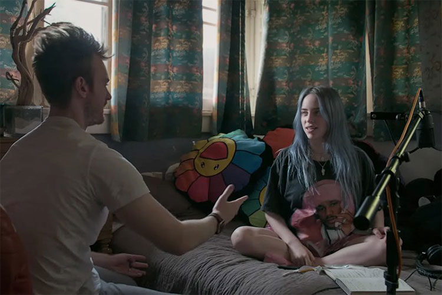
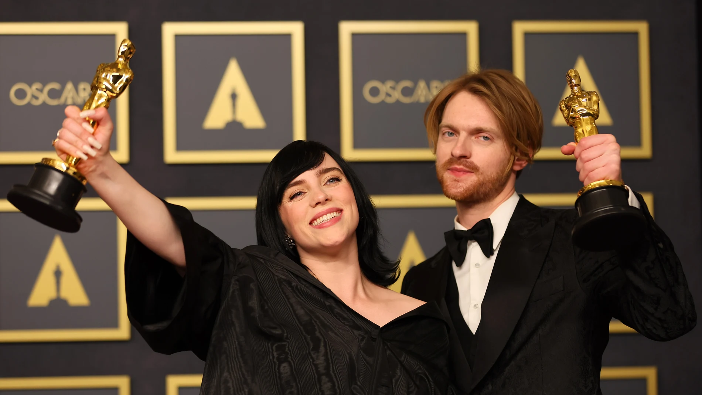
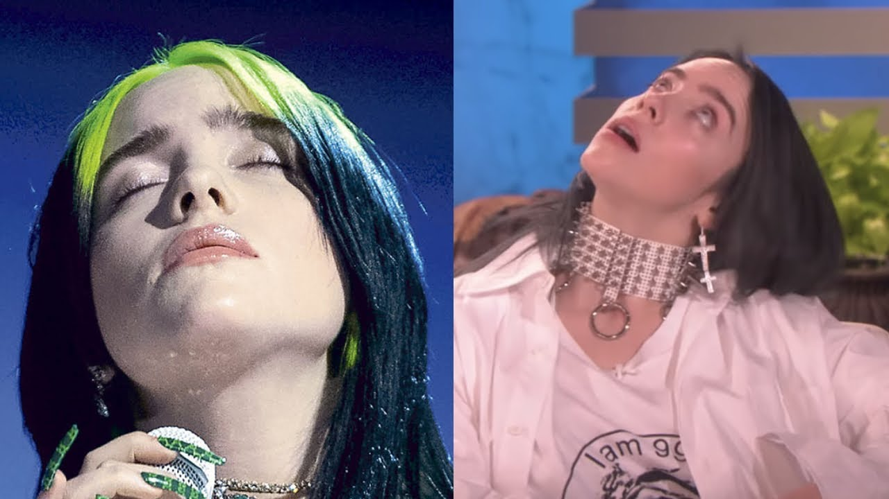
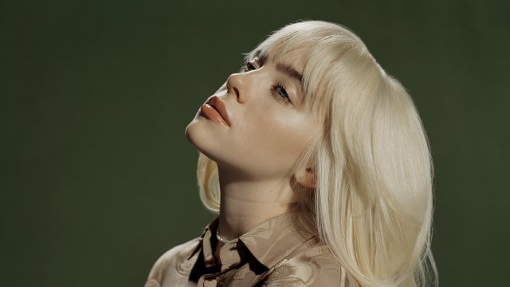
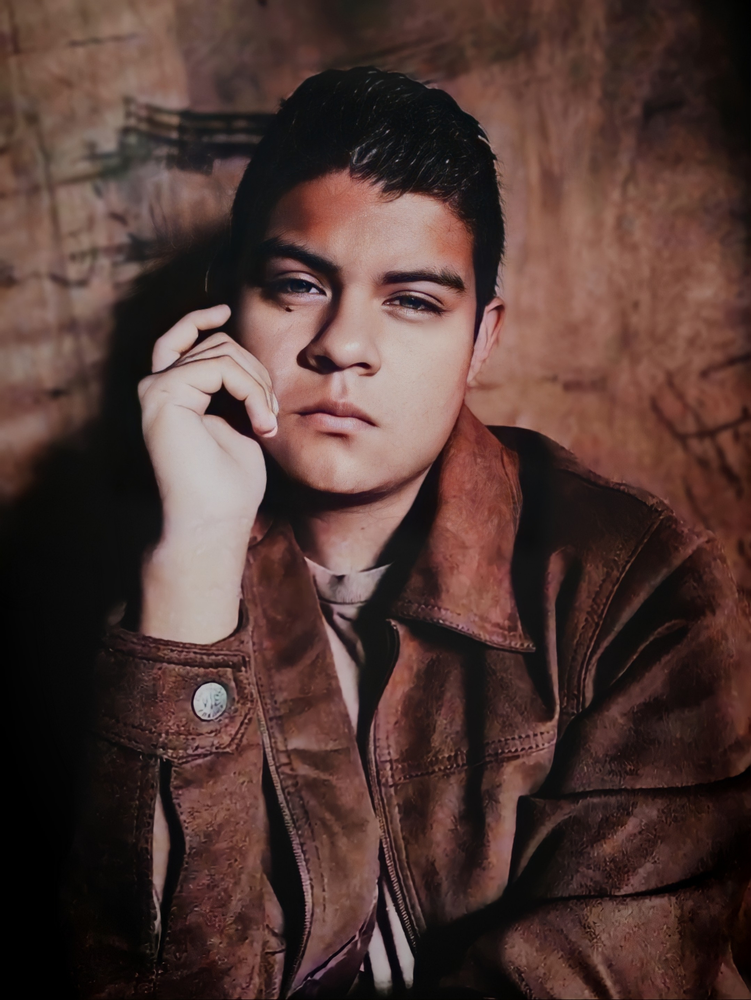

Billie Eilish Pirate Baird O'Connell ( 18 de diciembre de 2001, Los Angeles) es una cantante pop norteamericana.
Suele componer en colaboración con su hermano Finneas, que es también el productor de muchas de sus canciones
y la acompaña en sus actuaciones. Se la considera uno de los fenómenos musicales de mayor impacto de los últimos años.
La peculiar estética neogótica de la joven, sus letras fatalistas, su sonido electrónica y minimalista, y su voz ronca y susurrante no tardaron en llamar la atención.
Billie fue educada en el hogar durante la mayor parte de su infancia, pero eso no le impidió participar en actividades extracurriculares.
Le encantaba actuar en películas caseras y también cantaba y bailaba cada vez que encontraba la oportunidad.
Cuando cumplió 8 años, se unió a un coro y cantó con ellos durante tres años.
Aparte de la actuación y la música, el baile era otra de sus pasiones. Tomó clases de baile en sus primeros años de adolescencia.
Con una gran cantidad de habilidades, su objetivo era hacer una gran carrera en el mundo del espectáculo.Su hermano mayor tenía una banda propia.
Los padres de Billie, Maggie Baird y Patrick O'Connell, eran músicos y actores, y trabajaban en la industria del cine de Hollywood.
Sus progenitores no creían en la educación reglada, y educaron a Billie y Finneas en casa. La alentaron desde su infancia, tanto a ella como a su hermano,
a expresarse de forma artística, mediante clases de música, composición y actuación. Se crió en el vecindario de Highland Park.
A los ocho años se unió al Coro de Niños de L.A. y participó en varias audiciones de talentos infantiles...

Ambos respiran la música de la misma manera y se complementan a la perfección creando cada una de las piezas del disco cómo se puede comprobar en el reportaje.
Pero su fama llegó antes de la publicación de su primer álbum, ya que ya había girado antes por toda Europa.
Ella no termina de creerse que a toda la gente que va a sus conciertos le guste, pero su familia le hacen ver que sí, que ella es muy buena en la música.
Como buena adolescente, ha crecido viendo el nacimiento de otra estrella mundial como Justin Bieber, a quien considera su ídolo.
Por eso se sorprende cuando Bieber escucha su música e incluso quiere colaborar con ella.
Varios de los momentos más emotivos de la película suceden gracias al canadiense quien dice estar muy orgulloso de Eilish y desea que las cosas le vayan muy bien, algo que ella no termina de asimilar del todo.
Aunque no todo iba a ser bueno, Billie Eilish ni siquiera tiene veinte años y sufre los problemas que padecen los adolescentes, pero con una magnitud mucho más grande.
No tiene la misma libertad que el resto de la gente de su edad y eso afecta a sus relaciones personales. Intenta aceptar la fama de la mejor manera posible, pero hay veces en que se derrumba una vez que se apagan los focos.
Su familia es el pilar más importante que tiene y le acompañan en todo momento, tratando de guiarla, pero eso no impide que Eilish comente en muchos momentos que desearía no ser famosa y no tener que estar siempre sonriendo.
Quiere permitirse ser frágil por un momento, tener sus buenos y sus malos momentos, que se ven reflejados en las letras de sus canciones, como una persona normal y corriente.
𝓞𝓒𝓔𝓐𝓝 𝓔𝓨𝓔𝓢
En el mes de octubre del año 2015, Billie Eilish grabó el sencillo “Ocean Eyes”, este tema surgió cuando uno de sus profesores de baile le pidió a la joven estudiante que le ayudara a montar una coreografía con música original, Finneas O'Connell
(hermano mayor de Billie) le prestó la canción que él había compuesto inicialmente para su banda musical, y le propuso como condición a Billie que fuese ella misma quien la interpretara.
La canción “Ocean Eyes” fue subida a la plataforma digital de videos SoundCloud en el año 2016 y rápidamente se convirtió en todo un fenómeno viral, al conseguir más de dos millones de reproducciones en Spotify en su primer año.
Esto llevó a la cantante a crear un canal oficial en YouTube para poder subir un videoclip y la coreografía que ella había creado para su profesor usando esta canción.
Luego de firmar un contrato con Interscope Records el tema fue lanzado oficialmente el 18 de noviembre de 2016, recibiendo excelentes reseñas de la crítica especializada ya que Billie solo tenía quince años en el momento de su debut.
En septiembre de 2018, la joven cantante obtiene el “Disco de Platino” otorgado por la RIAA después de haber vendido un millón de copias.
𝐁𝐄𝐋𝐋𝐘𝐀𝐂𝐇𝐄
A raíz del éxito alcanzado de su primer sencillo, Billie publica su segundo tema el sencillo titulado “Bᴇʟʟʏᴀᴄʜᴇ”
en el mes de febrero de 2017, en esta oportunidad cuenta con un vídeo musical dirigido por los productores Miles y
AJ y fue estrenado el 22 de marzo de 2017. ¿Ha habido alguna vez una descripción más dulce de una masacre sangrienta?
En «Bellyache», una Eilish adolescente imagina la culpa que sentiría después de asesinar a sus amigos con una línea de guitarra acústica optimista.
“[Se trata de] tener dolor de estómago porque acabas de matar a un montón de gente, lo que harías si acabaras de matar a un montón de gente si fueras humano,
pero los psicópatas realmente no tienen esos sentimientos”, dijo poco después de que salió la canción.
«Simplemente nos convertimos en este personaje que sabe que está loco, y al mismo tiempo no lo sabe».
«Bellyache» es una canción de electropop,7 con influencias R&B, hip hop, y deep house.8910
Según la partitura publicada en Musicnotes.com por Universal Music Publishing Group, la canción está compuesta en clave de mi menor, a un ritmo moderado
de 100 latidos por minuto y un rango vocal de E3 a B4.11 Los versos de la canción cuentan con una guitarra acústica, mientras que el coro se basa principalmente de sintetizadores.12
Según Eilish, la letra de la canción fue escrita desde una perspectiva completamente ficticia, sobre un psicópata que mata a las personas cercanas a ella.13
Ella dijo que en general, la canción trata sobre «el concepto de culpa».9
𝚃𝙷𝙴𝚁𝙴𝙵𝙾𝚁𝙴 𝙸 𝙰𝙼
No mucho después de que este prodigio de cabello liso arrasara en los Grammy 2020, reapareció en un centro comercial vacío, donde una cámara la sigue hasta Chipotle.
Las estrellas, realmente son como nosotros. Eso es lo que sucede en el video autodirigido por Eilish para «Therefore I Am», una canción que también es su razón de ser ahora que todo el mundo le presta atención.
Los versos se mueven entre el hipno-pop y el ASMR-rap. Como muchos de los mejores trabajos de Eilish y Finneas, la canción se siente improvisada, como una nota de voz que acertaron en el primer intento.
⫷ 𝗖𝗨𝗥𝗜𝗢𝗦𝗜𝗗𝗔𝗗𝗘𝗦 ⫸

𝑯𝒂𝒑𝒑𝒊𝒆𝒓 𝑻𝒉𝒂𝒏 𝑬𝒗𝒆𝒓
🇱🇦 🇵🇷🇮🇲🇪🇷 🇯🇴🇻🇪🇳 🇦🇷🇹🇮🇸🇹🇦 🇪🇳 🇴🇧🇹🇪🇳🇪🇷 🇪🇱 🇬🇷🇦🇲🇲🇾 🇦🇱 "🇦🇱🇧🇺🇲 🇩🇪🇱 🇦🇳̃🇴"
Ganó el premio Grammy al Álbum del Año el cual es 𝑯𝒂𝒑𝒑𝒊𝒆𝒓 𝑻𝒉𝒂𝒏 𝑬𝒗𝒆𝒓 y, junto con su sencillo «Bad Guy» (2019), le valió a Eilish cinco premios Grammy. Tras su lanzamiento,
Eilish continuó lanzando sencillos independientes, como «Everything I Wanted» (2019).
Billie Eilish hizo historia en sus primeros Grammy Awards al conseguir estos premios en 5 de las categorías más importantes,
lo que la convirtió en uno de los músicos más jóvenes y en la primera mujer en lograrlo en la historia de los premios.
Además es la artista más joven en llevarse el premio por Álbum del año.
Con solo 18 años, Eilish arrasó en las categorías de Record of the Year, Album of the Year Song of the Year y Best New Artist junto a su hermano
Finneas O´Connell, quien es su colaborador y estuvo involucrado en todo el proceso creativo de su álbum When We Fall Asleep, Where Do We Go?, que es su primer álbum.
La cantante y compositora también se llevó el Grammy en la categoría de Best Pop Vocal Album.

¡¿GANADORA DE UN OSCAR?!
Eilish podría ser uno de esos artistas que consiguen el preciado EGOT, ya que, gracias a su canción No Time to Die, para la película número 25 de la saga del 𝟎𝟎𝟕,
se llevó un Oscar junto a su hermano, con quien produjo y escribió la canción.
Además, el dúo también se encargó de escribir la música para la Boy Band ficticia de la película Red, inspirada en esas bandas de los 2000 que marcaron la infancia y adolescencia de los millennials.
La música del agente 007 vuelve una vez más a triunfar en unos premios Oscar. No time to die, el tema de Billie Eilish y Finneas O'Connell, ha alcanzado el máximo reconocimiento con la estatuilla dorada.
Las dos últimas entregas de James Bond supusieron el premio a la mejor canción para Adele (Skyfall, 2012) y para Sam Smith (Spectre, 2015). Y esta vez ha vuelto a ocurrir.

𝗦̲𝗨̲𝗙̲𝗥̲𝗘̲ 𝗦̲𝗜̲𝗡̲𝗗̲𝗥̲𝗢̲𝗠̲𝗘̲ 𝗗̲𝗘̲ 𝗧̲𝗢̲𝗨̲𝗥̲𝗘̲𝗧̲𝗧̲𝗘̲
La intérprete ha contado que le diagnosticaron el trastorno cuando apenas tenía 11 años, después de tener pequeños tics físicos en su niñez,
que se fueron incrementando a medida que pasaban los años.
Aunque asegura que a día de hoy sus tics han disminuido, cuenta que todavía los padece. “Nunca dejo de tener tics.
Billie tiene una gran cantidad de tics que no puede controlar. En una publicación de Instagram que aborda los videos,
explicó que ha lidiado con el síndrome de Tourette durante casi toda su vida y que ha aceptado sus tics físicos como parte de ella.
Ella incluso dijo que en sus videos se burla de todos los tics que su enfermedad le produce.
No es habitual que sus consecuencias se hayan visto reflejadas en alguna de sus actuaciones, como ha ocurrido recientemente.

𝓢𝓾𝓼 𝓵𝓮𝓽𝓻𝓪𝓼 𝓱𝓪𝓫𝓵𝓪𝓷 𝓭𝓮 𝓹𝓻𝓸𝓫𝓵𝓮𝓶𝓪𝓽𝓲𝓬𝓪𝓼 𝓺𝓾𝓮 𝓵𝓮 𝓲𝓶𝓹𝓸𝓻𝓽𝓪𝓷...
Billie ha alzado su voz para cambiar la ley del aborto, diciendo que mujeres deberían decidir y hacer lo que deseen con sus cuerpos.
Comentó lo siguiente durante los ASCAP Pop Music Awards: “Las mujeres deberían decir, hacer y sentir y ser lo que quieran ser.
No debería haber nadie diciéndoles cómo vivir sus vidas y cómo hacer las cosas. Me enoja, si empiezo a hablar de esto, no pararé.
Los hombres no deberían de decidir sobre las mujeres, eso es todo lo que diré”.
La intérprete de "Bad Guy" volvió a copar la conversación social al inicio de semana por una instantánea captada por un paparazzi donde se la ve con un cómodo outfit paseando por los alrededores de Los Ángeles.
Pero lejos de quedarse en anecdótico, un usuario la volvió viral debido a su desafortunado comentario: "En 10 meses, Billie Eilish ha desarrollado un cuerpo de una wine mom en la treintena".
Según Urbandictionary, wine mom haría referencia a una mujer en sus treinta, generalmente madre, que disfruta tomando vino con sus amigas mientras comenta los cotilleos del barrio.
Y ya que hablamos de un outfit, recientemente ella entro en el mundo de la moda, medio de la promoción de su próximo disco y de la gran etapa que vive en su carrera, donde ya es considerada un fenómeno musical,
Billie decidió comenzar una nueva etapa en su carrera, la cual llega justo unos meses antes del estreno de su segundo álbum de estudio.
Fue a través de su cuenta de Instagram donde sorprendió a todos al publicar una serie de fotografías con las que hizo oficial este especial lanzamiento, y qué mejor manera que ser ella misma la modelo.
En las fotografías podemos verla vistiendo algunas sudaderas o hoodies en color beige y rosa, mientras juega ajedrez y voltea hacia la cámara.
El post de inmediato superó las 4.5 millones de reacciones y cientos de comentarios de parte de los seguidores de la artista.
La línea de ropa lleva el nombre del segundo álbum de estudio de la artista, el cual llego el 30 de julio de dicho año a todas las plataformas digitales.
Y ademas las prendas personalizadas de la cantante ya están disponibles en su página de Internet➔ store.billieeilish.comdonde todos sus fans pueden adquirir algunas de las distintas prendas que hasta el momento se encuentran disponibles.

CREADOR:
✦⊱•𝗝𝗢𝗦𝗨𝗘 𝗙𝗥𝗔𝗡𝗖𝗜𝗦𝗖𝗢 𝗣𝗘𝗥𝗘𝗭 𝗠𝗘𝗥𝗟𝗢𝗦•⊰✦
🇪🇸🇹🇺🇩🇮🇦🇳🇹🇪 - 1°🇦🇳̃🇴 🇩🇪 🇧🇦🇨🇭🇮🇱🇱🇪🇷🇦🇹🇴/🇩🇪🇸🇦🇷🇷🇴🇱🇱🇴 🇩🇪 🇸🇴🇫🇹🇼🇦🇷🇪 "🇧"
Correo INST: 5581038@clases.edu.sv
Correo PRFS: iam.josue.merlos@gmail.com